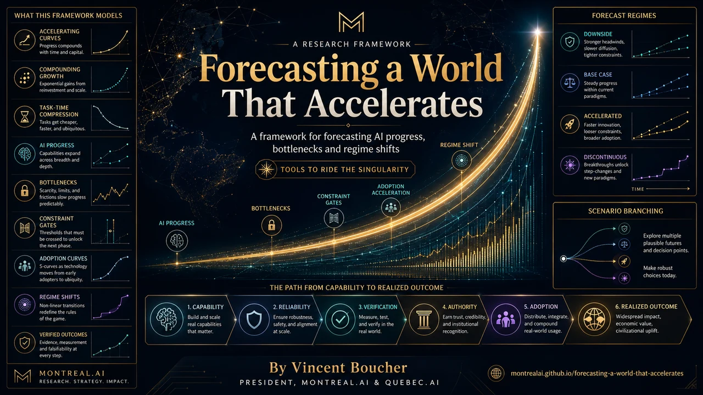

Measure the pace
Separate current level from rate of change and acceleration. A one-time capability jump is not the same as a durable exponential trend.

GoalOS Singularity Navigator Ω · research instrument
Forecast a world that may accelerate during the forecast itself. Verify the newest evidence, measure the change in pace and recalculate what can now happen in hours, days and parallel autonomous loops.
Decision support · scenario discipline · not a guaranteeThe forecasting law
Before forecasting, verify the newest reliable evidence—preferably primary sources—and compare today’s pace with 6–12 months ago across capability, cost, task-time compression, automation, adoption and the acceleration of those rates.
Separate current level from rate of change and acceleration. A one-time capability jump is not the same as a durable exponential trend.
Test linear, exponential, accelerating, constrained and regime-change models. Preserve a serious but uncertain discontinuity scenario.
Identify what now takes hours instead of weeks, what can run autonomously or in parallel and what still requires human, institutional or physical execution.
Scenario architecture
A useful forecast does not compress uncertainty into one number. It makes assumptions, triggers, bottlenecks and revision conditions visible.
Continuation under the most defensible current pace, with explicit constraints and ordinary adoption friction.
Faster capability, cost decline, automation and diffusion, with feedback between AI production and AI development.
A serious but highly uncertain regime shift in which recursive improvement, new architectures or institutional adoption sharply change the feasible frontier.
What does not accelerate automatically
Forecasts must preserve the bottlenecks that remain outside pure model capability.
Permission, accountable acceptance, liability, evidence and institutional confidence may move more slowly than generation.
Law, procurement, organizational change, labour agreements, standards and public legitimacy can dominate the critical path.
Compute, energy, supply chains, laboratories, robotics, data rights and physical execution impose real constraints.
Browser-local instrument
No information leaves the browser. The instrument creates a structured JSON brief—not a forecast and not professional advice.
Required return
The final analysis should expose its date, sources, assumptions and revision point.
Evidence, calculations and comparison with 6–12 months earlier.
Base, accelerated and discontinuous milestones with confidence ranges.
Authority, trust, adoption, regulation, capital, energy, supply chains and physical execution.
Observable events that would move probability or invalidate an assumption.
Actions appropriate to the present regime—not to a stale imagined future.
A specific review date or trigger that forces the forecast to be rebuilt from current evidence.